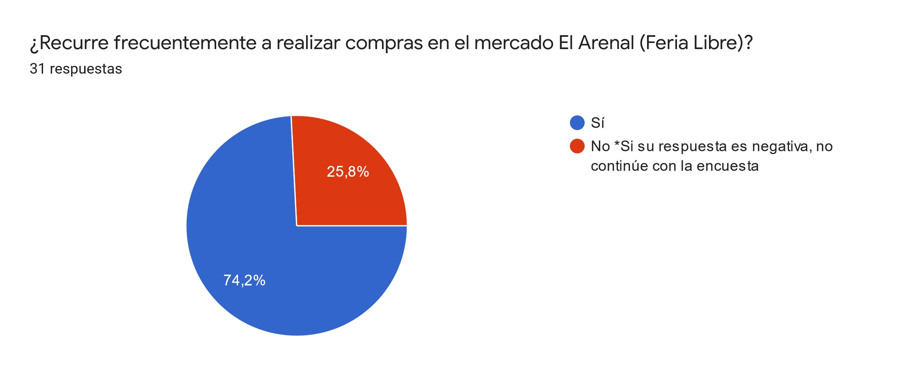

Esta es la primera vez, en dos décadas, en que los avances para acabar con el trabajo infantil se han estancado a nivel mundial. En Ecuador cerca de 420 mil niños, niñas y adolescentes han empezado a trabajar. Las deserciones escolares, la falta de empleo en los hogares como efectos de la crisis sanitaria provocada por el COVID-19, desencadenaría en un aumento del número de niñas, niños y adolescentes que deben abandonar las actividades propias de su edad y empezar a trabajar.
Situación
De acuerdo a la Encuesta Nacional de Trabajo Infantil (ENTI) 2012 del Instituto Nacional de Estadística y Censos INEC, existen 360.000 niños y niñas menores de 18 años en situación de trabajo infantil. Los niños sufren problemas de salud y la mala calidad de tiempo para el estudio, así como la existencia de maltrato en el trabajo, son condiciones inaceptables, por lo que es necesario seguir avanzando en la lucha contra el trabajo infantil.
Encuestas

Mapeo Colectivo
Modelo Midas
PROBLEMÁTICAS EN
LA CIUDAD DE CUENCA
Tras una investigación previa, se han encontrado varias problemáticas en el mercado “El Arenal” que contribuyen a acrecentar la problemática y que a su vez son resultado de las mismas:
- Familias numerosas, que no pueden costear estudios a todos sus hijos.
- Niños sin supervisión de un adulto. (Niños cuidan a otros niños)
- Casos de violencia intrafamiliar.
- Situación de pobreza y falta de educación.
- Madres/Padres enfermos, que envian a sus hijos a trabajar.
- Entorno famliar afectado.
- Efecto indirecto en términos de mantenimiento de la pobreza.
BÚSQUEDA
DE SOLUCIONES
Posterior al análisis de las problemáticas encontradas, se procede a buscar las posibles soluciones:
- Espacios que brinden información para los padres de familia dentro del mercado, sobre el daño a largo plazo que causan en sus hijos. (falta de oportunidades laborales y personales)
- Creación de un fondo de ayuda, en el que los ciudadanos puedan donar dinero, para ayudar a los niños en riesgo.
- Video documental que exponga la problemática en el mercado y ayude a concientizar a la comunidad.
- Infografías informativas que ayuden con la proporción de datos importantes sobre el trabajo infantil y sus con secuencias.
- Campaña publicitaria en medios masivos. (vallas publicitarias - banners – volantes)
PROPUESTA
Creación de una pieza de Motion Graphics que permita concientizar sobre la importancia del respeto hacia el derecho de educación de los niños y niñas dentro del Mercado El Arenal, dirigido a las familias (padres/madres).
A través de una historia contada desde la perspectiva de un niño dentro de un entorno familiar conformado por (papá y hermano pequeño), donde, el hermano mayor compara su realidad con la de su pequeño hermano, mientras que él debe trabajar, su hermano pequeño tiene acceso libre para educación y puede disfrutar de su niñez por su temprana edad. Su papá no es consciente del daño que causa en la vida de su hijo.
Personajes
Carlitos
Inteligente, inocente, amigable, consentido, valiente, Carlitos es el hermano menor de Pedrito, es el niño de la casa, consentido, alegre y sonriente, todos lo tratan de proteger porque es muy inocente y pequeño. Tiene acceso libre para educación y puede disfrutar de su niñez por su temprana edad.
Pedrito
Pedrito, 7 años. Es un niño humilde y amigable, a su temprana edad tuvo que asumir responsabilidades que no le correspondían. Su familia es de escasos recursos por lo que tiene que trabajar para ayudar económicamente a su padre y su hermanito de 4 años que inicia su etapa estudiantil, con el sueño de poder hacer lo mismo en el futuro
Juan
Juan es padre de familia, que está a cargo de sus dos hijos, no tienen los recursos necesarios para cubrir las necesidades básicas de su familia, tampoco puede dotar de educación básica a sus dos hijos, por ello trabaja arduamente junto a su hijo para salir adelante.